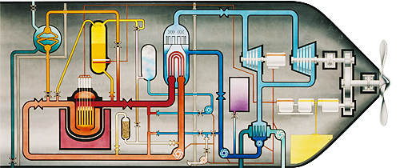

Nuclear Reactor Design
There are many types of nuclear reactor desing, but there are basically two types in use in the UK; pressurised water reactors (PWR) and gas cooled reactors. During my nine years working on nuclear reactor design I worked on both types, firstly PWR design and then Advanced Gas-cooled Reactor (AGR) design.
In September 1969 I joined Rolls Royce and Associates in Derby as a Graduate Apprentice. This meant spending my first year with the company moving from department to department so as to gain a better understanding of what the company did. It also included aterm at the Royal Naval College in Greenwich. Five of us from RR&A attended a course for Naval officers, who would man nuclear submarines, to tell them something about what happened at the back-end of a submarine, in other words, the power plant consisting of the nuclear reactor, turbines and propeller. In 1998 the college was closed and courses moved elsewhere. The 'Old Royal Naval College' is now a museum.
 As well as the course being interesting, we all had a good time. We eat all our meals, even breakfast, in the Painted Hall and went to formal dinners and a ball. It was the first time that I'd worn white tie and tails! The officers lived pretty well.
As well as the course being interesting, we all had a good time. We eat all our meals, even breakfast, in the Painted Hall and went to formal dinners and a ball. It was the first time that I'd worn white tie and tails! The officers lived pretty well.
Not many people new that there was a small nuclear reactor in the basement and we were allowed to 'play' with it.
At RR&A I also worked in the Physics Department, the Mechanical Engineering Department and the Instrumentation Department. In the latter I helped instrument a test rig that simulated one coolant channel in the reactor. The metal of the reactor channel was heated electrically and we had to measure the temperature at many point to make sure that the metal would not melt.
After my one-year apprenticeship I started work in a team within the Physic Department that developed and maintained the software tools that the Design team used. There was also a Shielding team and a Test team and a team that ran the on-site reactor. We would all sometimes help to set up experiments in the reactor by attaching small pieces of metal to the reactor core that were used to measure the neutron flux distribution, what our tools were designed to calculate. We were also at times asked to help run tests on submarines. I was only asked to help on a boat in dock at Barrow-in-Furness and on a land-based submarine back-end (HMS Vulcan) at Dounrey in Scotland. The photo is of HMS Valiant.
The software tools that we developed were written in a language called FORTRAN, which was used for scientific/mathematical calculations rather than for financial/database type problems. However, this was long before the advent of personal computers and so we used a mainframe computer. We put our programs and data on punched cards and then handed the deck of cards over to the people who managed the computer. The output from our program was then printed on large sheets of paper, each sheet being perforated from the next.
The tools we were developing were aimed at calculating the neutron flux distribution in the three-dimensional reactor core. Then, knowing the distribution of fissile nuclei you can work out the power being produced. However, with the limited computing capability that we had it was necessary to break the problem down. For 'difficult' regions we used a one-dimensional calculation to produce averaged parameters that were then used in a two-dimensional calculation. Various 'slices' were then put together in a 1-D calculation. The integro-differential equation that describes the neutron flux distribution can't be solved analytically, so we used a numerical version and solved it iteratively. So as long as it converged we were OK.
The Navy had two Valiant class fleet submarine and four Resolution class nuclear ballistic missile submarines. These all had Rolls Royce PWR1 reactors. There has been a second generation of submarines since then and the latest generation uses Rolls Royce PWR3 reactors. PWR stands for Pressurised Water Reactor. Nuclear reactors work by causing the nucleus of particular heavy atoms, such as Uranium-235, to break into two, releasing a lot of kinetic energy. This energy appears as heat, which is used to generate steam, which turns a turbine to drive the propeller and to generate electricity. In a submarine the electricity can also be used to turn the propeller. In addition to the fissile material, a reactor needs two things, material to slow down the very fast neutrons that are released when the nucleus splits and material to take the heat away.
In a PWR the neutrons need to be slowed so that they can be captured by another nucleus and thus cause a chain reaction. Water is quite good at doing this. And if the water is put under high pressure then is can be pumped through the reactor core to remove the heat. The diagram shows the general arrangement of a PWR. It is larger than that found in a submarine, where the reactor core is about the size of a dustbin. One advantage of a PWR is that if more energy is taken (by demanding more steam) the water is cooled, which makes it denser, which means it slows down the neutrons faster, causing more fissions and thus the generation of more power. This is known as 'load following'. So the control rods, which absorb neutrons, are only used to start up and shut down the reactor and to compensate for the gradual depletion of fuel.
In 1976 I switched to working on Advanced Gas-cooled Reactors (AGR), which are quite different. As the name implies, they use a gas as coolant rather than water. Carbon dioxide (CO2) is used to remove the heat from the reactor core and transfer it to water, which again generates steam to turn a turbine and generate electricity. However, CO2 is not good at slowing down neutrons, so a different 'moderator', graphite, is used. Blocks of graphite, which is a form of carbon, are assembled around the fuel elements, but since there is relatively little expansion of the graphite with temperature there is no load-following. This means that the control rods are used to move the reactor from one power output level to another.
As you can see from the cut-away diagram, the reactor vessel and the heat exchangers are surrounded by a lot of concrete. This is not only structural, it also acs as radiation shielding. One advantage of an AGR, however, is that the pressure within the reactor is considerably lower than that in a PWR and so a gas-tight seal can be made at the top to allow a refueling machine to move around the reactor floor (above the reactor) and replace fuel elements. This means that the reactor can be refueled on-line, while it is producing power. With a PWR, the whole top of the pressure vessel has to be removed and the whole core replaced.
My work at NNC was quite different to that at RR&A in that I was not developing tools, but using existing tools to investigate various design options.
Once again the programs were run on a mainframe computer using data on punched cards. We used an IBM mainframe and so had to start our deck of cards with a set of Job Control Language (JCL) cards that instructed the computer what to do with your data. JCL was more complicated and cryptic than the programming languages used (still FORTRAN). So you took your deck of cards down to the computer room and put them in the In-tray. Then you went back later to get the print-out.
As I said previously, my career in nuclear power came to an end in November 1978, when I switched fields completely.